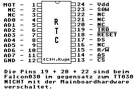
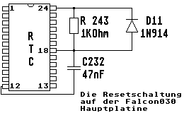

Previous
Next
TOC
Die Pinbelegung des Uhrenchips im Falcon030 und der Medusa
Achtung, beim Falcon030 und der Medusa sitzt die Batterie huckepack
auf dem Chipgehäuse und ist vergossen - hier muß der komplette Chip
ausgelötet und gewechselt werden wenn die interne Batterie ver-
braucht ist!

Eine Rücksetzmöglichkeit für den RTC Baustein im Falcon030

Die verwendeten RealTimeClocks mit integrierten NV RAM haben keinen
Ramclear Eingang, das heißt man kann diese ICs nicht durch setzen
eines Jumpers löschen wenn man mal die Parameter verstellt hat und
der Computer nicht bootet (nur die Dallas Chips DS1287A, DS12887A
sowie der DS12B887 haben die (/RCLR) Ramclearfunktion auf Pin 21).
Es gibt aber bei diesen RTC Bausteinen die möglichkeit für einen
kurzen Augenblick innerhalb der Bootphase den Reseteingang auf LOW
zu legen (Drahtbrücke von Pin 18 des RTC über einen Taster gegen
Masse) und so das TOS zu veranlassen auf die Parameter innerhalb
des TOS 4.0x zuzugreifen. Dann fährt zwar der Rechner mit einer eng-
lischen Tastatur und englischen Desktop hoch aber nach einem sorg-
fältigen umstellen des NV RAMS mittels dem Programm BOOTCONF von
Uwe Seimet ist alles wieder paletti.
Das betätigen des RESET Einganges am RTC Baustein hat nicht zur
Folge das der Baustein zurückgesetzt wird, alle Daten bleiben er-
halten inkl. der Uhrzeit und der Datumsfunktion!
Diese Methode funktioniert auch bei den RTC Bausteinen der Firma
Motorola.
Kapitel Die Pinbelegung des Uhrenchips im Falcon030/Medusa, Seite 1